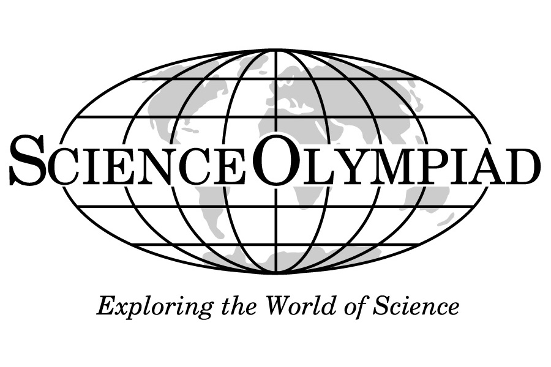
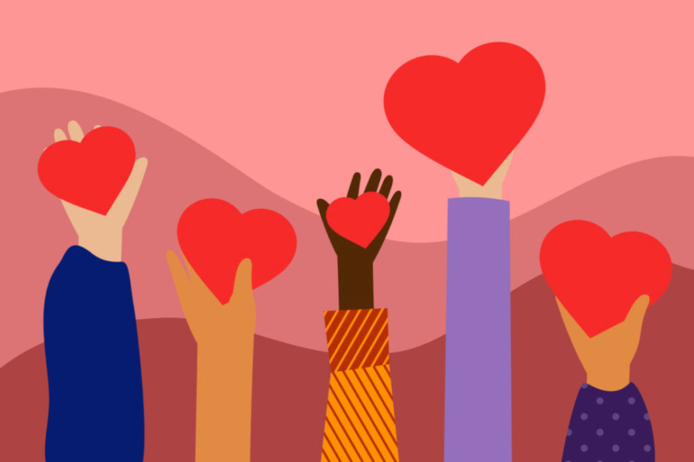

I possess a strong practical mindset that has been honed through my involvement in activities like the Science Olympiad. Growing up, I didn't have all the resources readily available, which taught me the invaluable skill of making the most out of what I had. This practical approach is not just limited to solving scientific problems; it permeates various aspects of my life. Whether it's finding innovative solutions to everyday challenges or optimizing limited resources, I thrive on the principle of efficient utilization and adaptability, which has proven to be a valuable asset in navigating both academic and real-world scenarios.
Another key aspect of my character is kindness. I firmly believe in the importance of inclusivity and making others feel valued and appreciated. This commitment to kindness is born out of my personal experiences of never wanting to be left out or overlooked. I consistently strive to extend a helping hand, ensure that everyone's voice is heard, and anticipate the needs of those around me. Being kind isn't just a superficial gesture; it's a heartfelt approach to building meaningful connections and fostering a supportive and harmonious environment where everyone has a sense of belonging and significance.
